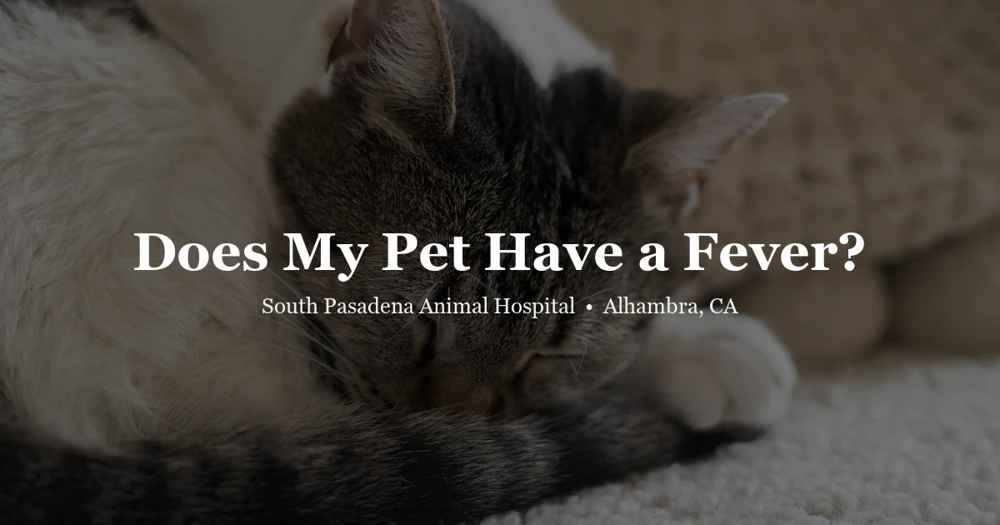

April 19, 2026 · 6 min read
Does My Pet Have a Fever? How to Tell and What to Do

A pet who seems "off" — warm to the touch, shivering, or unwilling to eat — might have a fever. But telling the difference between a fever and just a warm dog who was lying in a sunny spot requires more than pressing your hand to their nose. Knowing how to actually check your pet's temperature and what the numbers mean can help you make a more informed decision about whether and how urgently to call the vet.
Normal Body Temperature Ranges for Pets
The first thing to understand is that pets run warmer than humans. A human temperature of 98.6°F is normal; that same temperature in a dog or cat would be hypothermia. Here are the normal ranges:
| Species | Normal Rectal Temperature | Fever Threshold |
|---|---|---|
| Dog | 101.0–102.5°F (38.3–39.2°C) | >103°F (39.4°C) |
| Cat | 101.0–102.5°F (38.3–39.2°C) | >103°F (39.4°C) |
| Rabbit | 101.3–104.0°F (38.5–40.0°C) | >104°F (40°C) |
| Guinea Pig | 99–103.1°F (37.2–39.5°C) | >103°F (39.5°C) |
| Bird (parrot) | 103–106°F (39.4–41.1°C) | Varies; consult vet |
These are rectal temperature ranges measured with a digital thermometer. Note that a dog or cat at 103°F is already febrile — don't wait until they reach what feels like a "high" human fever to act.
Signs That May Suggest a Fever
Before you reach for a thermometer, these signs can alert you that something may be wrong:
- Warm or dry nose — the popular belief that a wet nose means a healthy dog is not reliable, but a notably hot, dry nose combined with other symptoms is worth noting
- Warm ears — ears that feel significantly warmer than usual (compared to the pet's baseline) can suggest elevated body temperature
- Shivering or trembling — the body's attempt to generate heat during temperature regulation
- Lethargy and decreased appetite — very common accompaniments to fever across all species
- Rapid breathing — panting in dogs is normal heat dissipation; panting in a resting cat or rapid shallow breathing in any pet is not
- Red or glassy-looking eyes
- Loss of grooming behavior — particularly in cats
None of these signs alone confirms a fever. The only way to know for certain is to measure your pet's temperature.
How to Take Your Pet’s Temperature at Home
Rectal thermometry is the most accurate method available at home. You will need a digital thermometer (a dedicated one kept for pet use), petroleum jelly or water-based lubricant, and ideally a second person to help hold the pet steady.
- Lubricate the tip of the thermometer generously.
- Have a helper gently restrain the pet — one hand under the chest, the other supporting the hindquarters.
- Lift the tail gently and insert the thermometer 1 inch into the rectum for dogs and cats; slightly less for small animals.
- Wait for the digital beep, then read the result.
- Reward the pet calmly and clean/disinfect the thermometer.
If the reading is above 103°F in a dog or cat, call your veterinarian. Above 104°F, call immediately. Above 106°F, go to an emergency clinic now — this level of fever can cause permanent organ damage.
Human forehead thermometers are not calibrated for animals and will give inaccurate readings. Ear thermometers marketed for pets can work but are less reliable than rectal measurement unless you're confident in proper placement technique.
Common Causes of Fever in Pets
Infections
Bacterial and viral infections are the most common cause of fever in companion animals. Upper respiratory infections, urinary tract infections, wounds with secondary infection, and systemic illnesses like leptospirosis can all elevate body temperature. Parvovirus in unvaccinated dogs causes high fever alongside severe gastrointestinal symptoms — this is a veterinary emergency. Keeping your pet's vaccinations current significantly reduces the risk of several fever-causing infectious diseases.
Tick-Borne Diseases
In the San Gabriel Valley and surrounding foothill areas, tick exposure is a real concern year-round. Diseases like Rocky Mountain spotted fever, anaplasmosis, and ehrlichiosis can cause fever, lethargy, and decreased appetite in dogs. A tick-borne disease panel (blood test) is often recommended for dogs with unexplained fever and outdoor exposure in these areas.
Immune-Mediated and Inflammatory Conditions
When the immune system is misdirected against the body's own tissues — as in immune-mediated hemolytic anemia, immune-mediated thrombocytopenia, or certain forms of polyarthritis — the resulting inflammation produces fever. These conditions require specific diagnostics to identify and targeted treatment to manage.
Vaccine Reactions
A mild, brief low-grade fever (under 103°F) in the 12–24 hours after vaccination is normal and reflects a healthy immune response. The pet may be quieter than usual. This typically resolves on its own. A high fever, facial swelling, vomiting, or difficulty breathing after vaccination represents a more significant reaction and requires a call to the clinic that administered the vaccine.
Toxin Ingestion
Some toxins — including certain plants, xylitol (in sugar-free products), and certain medications — can cause fever as part of a systemic toxic reaction. If you suspect your pet ingested something and they are febrile, contact your vet immediately or call ASPCA Animal Poison Control (888-426-4435).
Fever in Exotic Pets
Assessing fever in exotic animals requires species-specific knowledge. Rabbits with temperatures above 104°F are febrile and typically very unwell — signs include hunching, rapid breathing, and reluctance to move. Fever in rabbits is often associated with bacterial infections (particularly Pasteurella), abscesses, or GI disease.
Guinea pigs with fever often show marked lethargy, reduced eating, and labored breathing. Upper respiratory infections are a common cause. Guinea pigs deteriorate rapidly when ill and should be seen urgently when signs appear.
Interpreting temperature in birds is more complex, as their normal ranges are wider and vary by species. Clinical signs of fever and systemic illness in birds — fluffed feathers, closed eyes during the day, reduced vocalizations — should prompt immediate veterinary contact. Birds are masterful at hiding illness, and by the time signs are unmistakable, they may be critically ill.
Reptiles are ectothermic (cold-blooded), meaning their body temperature is determined by environmental temperature rather than internal regulation. They do not "run fevers" in the mammalian sense. However, sick reptiles often seek warmth (behavioral fever) — if your lizard or snake is unusually hiding under a heat source or pressing against warm surfaces, infection may be the underlying cause and a veterinary visit is appropriate.
When to Seek Veterinary Care
Use this as a quick guide:
- 103–104°F: Call your vet for a same-day appointment. Begin monitoring closely.
- Above 104°F: Go to the vet today, even without an appointment. Call ahead.
- Above 106°F: Emergency. Go immediately. This level can cause brain damage.
- Any fever in a puppy, kitten, or exotic pet: Treat as urgent — call the clinic right away.
- Fever + other symptoms (difficulty breathing, collapse, pale gums, seizures): Emergency without delay.
Do not attempt to reduce a pet's fever with ice baths, fans, or cold water without veterinary guidance — rapid temperature changes can cause dangerous physiological shifts. The veterinarian will manage temperature reduction safely once the underlying cause is being addressed.
Frequently Asked Questions
What is the normal body temperature for a dog or cat?
Normal rectal temperature for both dogs and cats is 101.0–102.5°F (38.3–39.2°C). A temperature above 103°F is considered a fever. Above 104°F warrants a prompt vet visit; above 106°F is a medical emergency that can cause organ damage.
Can I use a forehead or ear thermometer on my pet?
Human forehead (temporal) thermometers are not accurate for pets. Ear thermometers designed for veterinary use can work but are less reliable than rectal measurement. A digital rectal thermometer is the gold standard for accuracy at home.
Should I give my pet Tylenol or aspirin for a fever?
Never give Tylenol (acetaminophen) to any pet — it is highly toxic to cats and dangerous to dogs. Aspirin can cause GI bleeding. No human pain or fever medications should be given to animals without veterinary guidance.
What causes fever in pets?
Common causes include bacterial or viral infections, tick-borne diseases, immune-mediated conditions, toxin ingestion, and reactions to vaccinations. Fever of unknown origin does occur and warrants a thorough diagnostic workup at our Alhambra clinic.
When does a pet's fever become a medical emergency?
A temperature above 104°F warrants a same-day vet visit. Above 106°F is a critical emergency — high temperatures can cause brain damage, organ failure, and death. Fever combined with difficulty breathing, seizures, collapse, or pale gums requires immediate emergency care.